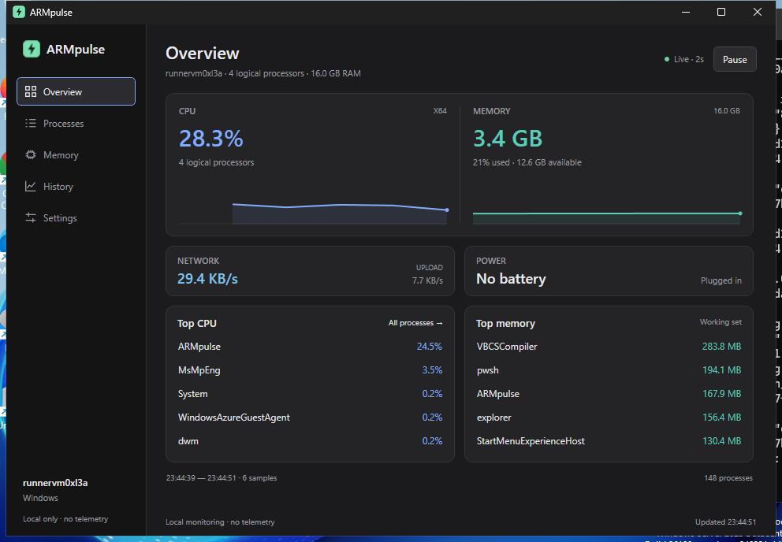

01 / OBSERVE
Keep the context.
Live CPU and memory charts, network throughput, battery, and power source. Recent history helps you distinguish a spike from a pattern.
BUILT FOR WINDOWS ON ARM
A clearer view of your PC, and the apps behind the activity. Native Windows monitoring for your Snapdragon Surface.

Your key resources and their top consumers, together.
Real screenshots captured on an x64 Windows test machine. Readings will reflect your own PC.
THE USEFUL DETAILS
Start with the whole system. Go straight to the app that needs your attention.
Live CPU and memory charts, network throughput, battery, and power source. Recent history helps you distinguish a spike from a pattern.
Top CPU and memory lists take you straight to process details. Search by name, PID, or path, then filter and sort to narrow the list.
Open an executable’s folder, lower CPU priority, or end a process with confirmation. Export a filtered snapshot as CSV when you need a record.
See ARM-native and compatibility process types. Identify x64 and x86 apps running on ARM without assuming every module is emulated.
YOUR COMPUTER. YOUR DATA.
No accounts, analytics, or uploads in the app. History stays in memory and clears when you quit. Closing the window closes ARMpulse.
A CLEARER PICTURE STARTS HERE
Pick your Windows build.
Extract the ZIP. Open ARMpulse.exe.
For Snapdragon Surface laptops and other Windows on ARM PCs.
Download ARM64v0.2.1 preview · Portable ZIP · Runtime includedFor Windows PCs with an Intel or AMD 64-bit processor.
Download x64v0.2.1 preview · Portable ZIP · Runtime includedWindows 11 · Unsigned preview. Windows may show a SmartScreen prompt.
Release notes & checksumsBEFORE YOU OPEN IT
A Snapdragon Surface uses ARM64. Intel and AMD Windows PCs use x64. If you’re unsure, open Windows Settings → System → About and check the processor and system type. Both downloads include the runtime.
The current version shows CPU, physical memory, network throughput, battery, and process data. GPU/NPU utilization, temperatures, fan speeds, and memory compression are not supported in this version. Restricted readings show a dash.
Extract the ZIP into a folder you control, then run ARMpulse.exe. There’s no installer, service, or automatic startup entry. To remove it, close the app and delete its folder. Preferences are stored locally under %LOCALAPPDATA%\ARMpulse.
This preview is unsigned, so Windows may show a SmartScreen warning. Only run a build you trust. The GitHub release includes SHA-256 files so you can check the ZIP’s integrity.
You can open its executable folder, set Below Normal CPU priority, or force end it after confirmation. Ending a process can lose unsaved work. ARMpulse respects Windows access restrictions and protects critical and system processes. Lower priority is not Windows Efficiency Mode.